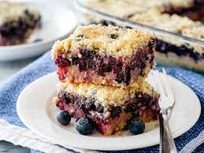

BLUEBERRY BARS

Winter is a time to simply take it easy with one of the most iconically flavor romances of all - lemon + blueberry, forever
Prep Time: 25 mins
Cook Time: 40 mins
Additional Time: 15 mins
Total Time: 1 hrs 20 mins
Servings: 9
Yield 9x9-inch pan
Ingredients
Blondies:
- ¾ cup unsalted butter
- 2 ounces white chocolate, finely chopped
- 1 cup packed light brown sugar
- 2 tablespoons fresh lemon juice
- 1 teaspoon lemon zest
- ½ teaspoon kosher salt
- 1 large egg
- 1 large egg yolk
- 1 teaspoon vanilla extract
- 2 cups all-purpose flour
- 1 cup fresh blueberries
Lemon Glaze:
- ⅔ cup powdered sugar, sifted
- 4 teaspoons fresh lemon juice
Directions
- Preheat the oven to 350 degrees F (175 degrees C). Grease and line a 9-inch square baking pan with parchment paper,
allowing a 1-inch overhang.
- Melt butter in a small saucepan over medium heat.
Add white chocolate and stir until chocolate is melted and incorporated with the butter.
Scrape mixture into a large mixing bowl and whisk in the brown sugar until smooth.
Whisk in the lemon juice, zest, and salt until all is combined. Whisk in egg, egg yolk, and vanilla extract.
- Stir in flour. Using a rubber spatula, fold in blueberries.
Scrape batter into the prepared pan and smooth into an even layer; it will be a bit thick.
- Bake in the preheated oven until golden brown, 35 to 40 minutes.
Transfer to a wire rack and allow blondies to cool for at least 15 minutes in the pan.
When ready to serve, lift the blondies out of the pan using the parchment paper overhang and place on a cutting board.
- Make the glaze: whisk powdered sugar and lemon juice together in a small bowl until smooth. Drizzle over the blondies.
Slice and serve.